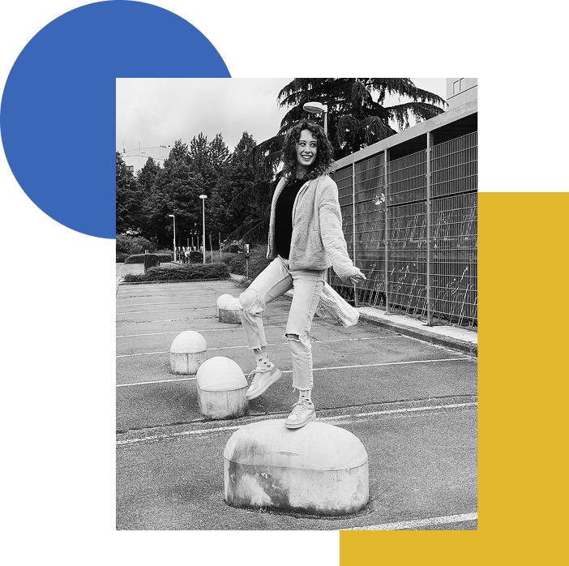
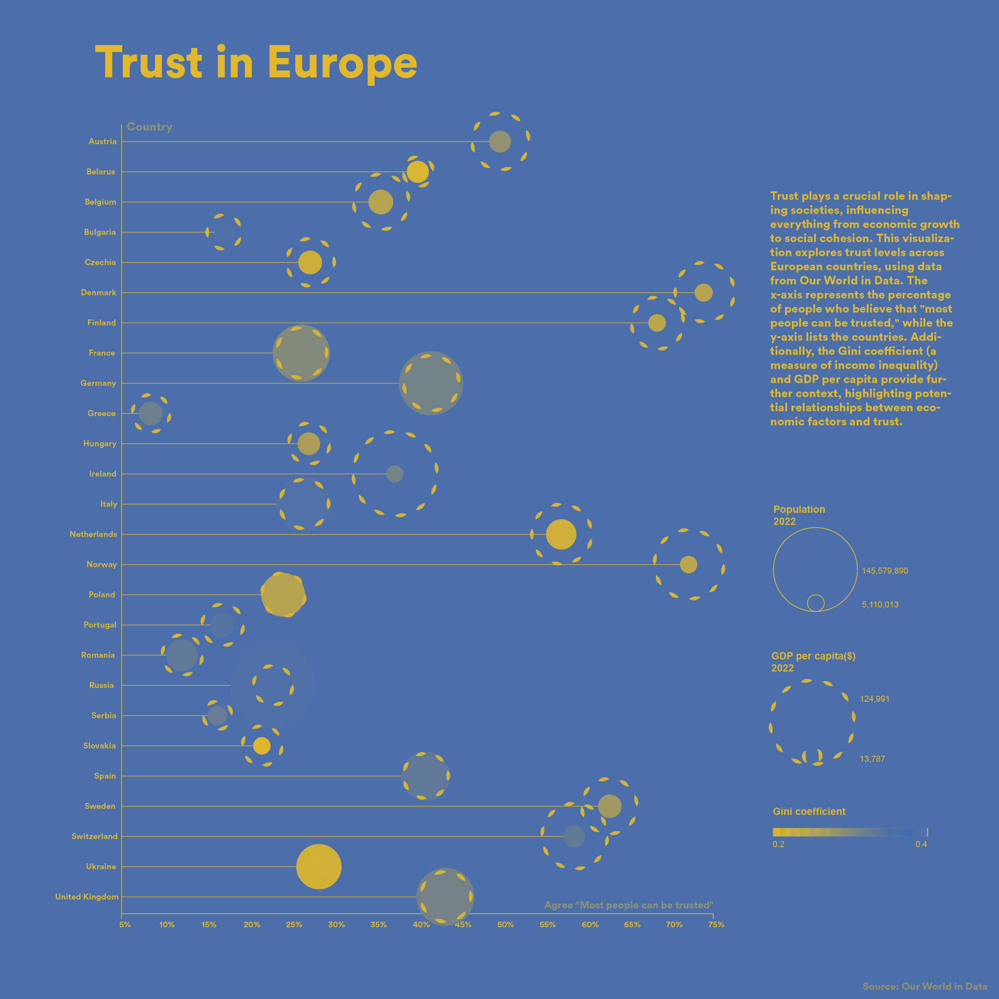
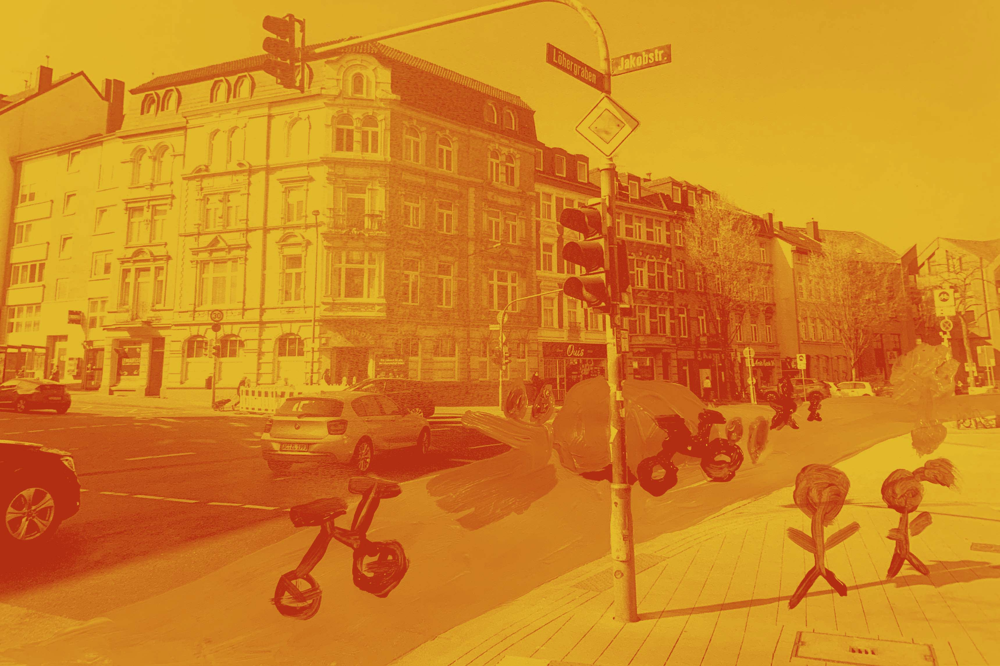
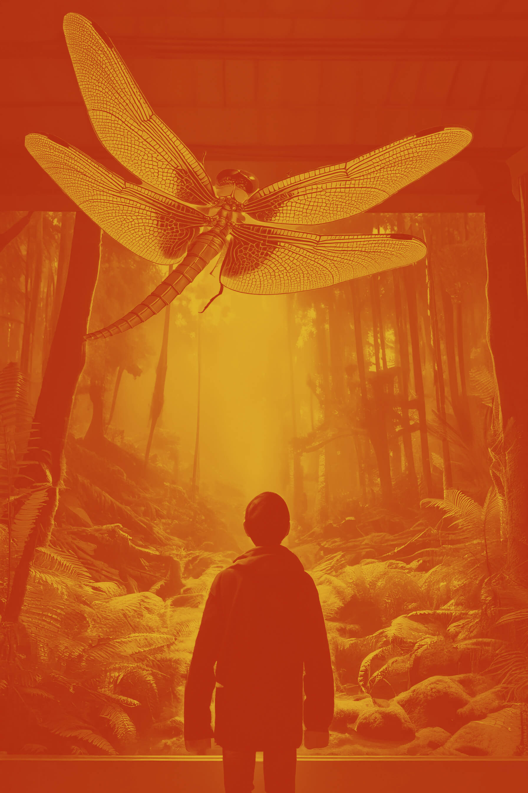
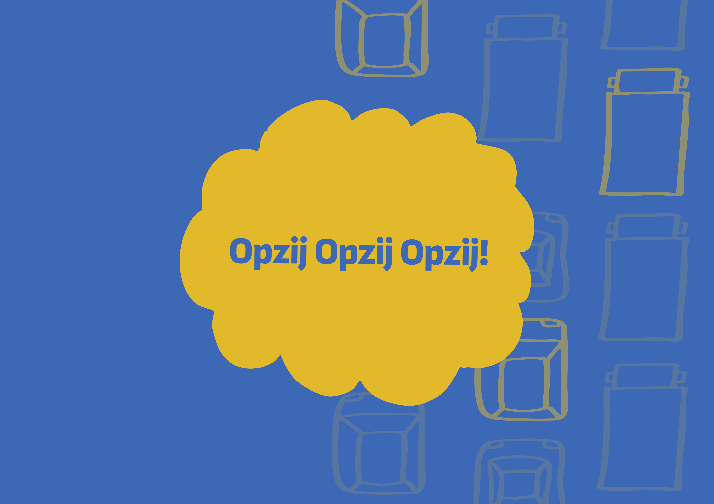

Through my studies, I’ve had the opportunity to explore a wide range of disciplines within
design. From visual storytelling to interaction design, each experience helped me understand not
just how to design, but why it matters.
Now, in my final year, I have a clear sense of direction. I know what kind of designer I
want to become. I want to create experiences that connect with people. Work that is not only
visually strong, but meaningful and intuitive to use.
I’m especially drawn to working in multidisciplinary teams, where different perspectives come
together to shape something bigger than any one discipline could achieve alone. Collaboration,
iteration, and exploring ideas from multiple angles are essential parts of how I like to work.
I’m motivated by projects that have impact. Projects that challenge me, that grow over
time, and that require both creative thinking and strategic decisions. That’s where I feel most at
home as a designer.


Data visualisation

Concept Development

Experience Design

Data visualisation